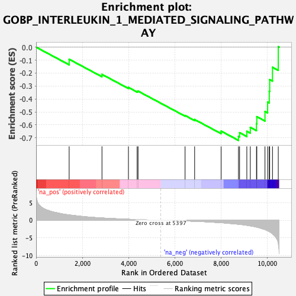
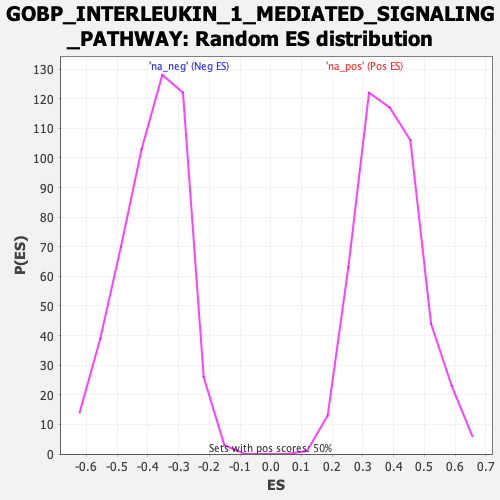

| Dataset | qlf.KOd4vsWTd4_gsea_score |
| Phenotype | NoPhenotypeAvailable |
| Upregulated in class | na_neg |
| GeneSet | GOBP_INTERLEUKIN_1_MEDIATED_SIGNALING_PATHWAY |
| Enrichment Score (ES) | -0.71989715 |
| Normalized Enrichment Score (NES) | -1.8745861 |
| Nominal p-value | 0.0 |
| FDR q-value | 0.02819384 |
| FWER p-Value | 0.619 |

| SYMBOL | RANK IN GENE LIST | RANK METRIC SCORE | RUNNING ES | CORE ENRICHMENT | |
|---|---|---|---|---|---|
| 1 | IRAK2 | 1429 | 1.514 | -0.0934 | No |
| 2 | OTUD4 | 2848 | 0.651 | -0.2102 | No |
| 3 | IRAK1 | 3992 | 0.291 | -0.3110 | No |
| 4 | MAP3K7 | 4369 | 0.203 | -0.3411 | No |
| 5 | TRAF6 | 4409 | 0.190 | -0.3394 | No |
| 6 | MAPK3 | 6441 | -0.186 | -0.5278 | No |
| 7 | VRK2 | 6855 | -0.290 | -0.5590 | No |
| 8 | IKBKB | 8000 | -0.692 | -0.6485 | No |
| 9 | TOLLIP | 8750 | -1.117 | -0.6883 | Yes |
| 10 | RPS6KA4 | 8799 | -1.145 | -0.6605 | Yes |
| 11 | RELA | 9112 | -1.422 | -0.6501 | Yes |
| 12 | MYD88 | 9262 | -1.582 | -0.6196 | Yes |
| 13 | TNIP2 | 9529 | -1.916 | -0.5908 | Yes |
| 14 | IRAK4 | 9544 | -1.952 | -0.5369 | Yes |
| 15 | ZBP1 | 9897 | -2.610 | -0.4967 | Yes |
| 16 | EGR1 | 10012 | -2.936 | -0.4246 | Yes |
| 17 | IL1RL2 | 10082 | -3.190 | -0.3410 | Yes |
| 18 | RPS6KA5 | 10101 | -3.256 | -0.2507 | Yes |
| 19 | IL1R2 | 10222 | -3.781 | -0.1553 | Yes |
| 20 | IL1R1 | 10472 | -6.454 | 0.0034 | Yes |
